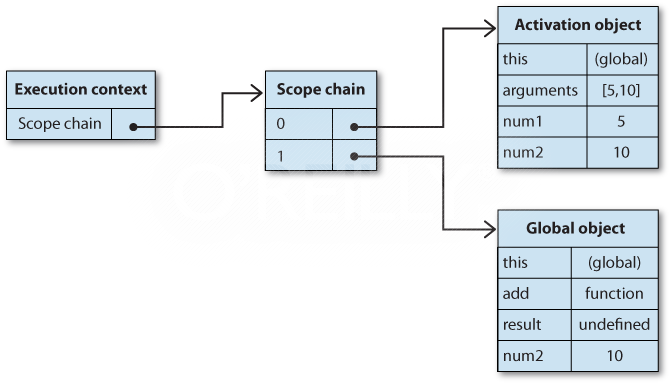
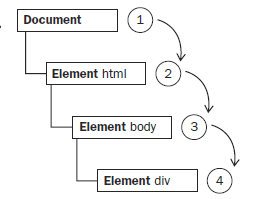

High Performance JavaScript
JavaScript Performance Best Practices
JavaScript Overview
JavaScript History
- Beginnings at Netscape
- Server-side JavaScript
- Adoption by Microsoft - IE3.0 - 1996
- Standardization - Ecma - 1997
- Later developments
Features
- Imperative and structured
- Dynamic
- Functional
- Prototype-based
- Implicit and explicit delegation
- Miscellaneous
- Vendor-specific extensions
Major Components
- ECMAScript - which is defined in ECMA - 262 and provides the core functionality
- DOM (Document Object Model) - which provides methods and interfaces for working with the content of a web page
- BOM (Browser Object Model) - which provides methods and interfaces for interacting with the browser
ECMAScript
ECMAScript is the scripting language standardized by Ecma International in the ECMA-262 specification and ISO/IEC 16262. The language is widely used for client-side scripting on the web, in the form of several well-known implementations such as JavaScript, JScript and ActionScript.
- Syntax
- Types
- Statements
- Keywords
- Reserved words
- Operators
- Objects
DOM
The Document Object Model (DOM) is an application programming interface (API) for XML that was extended for use in HTML. The DOM maps out an entire page as a hierarchy of nodes. Each part of an HTML or XML page is a type of a node containing different kinds of data.

DOM Levels
- DOM level 1 (DOM Core, DOM HTML)
- DOM level 2 (DOM Views, DOM Events, DOM Style, DOM Traversal and Range)
- DOM level 3 (DOM Load and Save, DOM Validation)

BOM
Primarily, the BOM deals with the browser window and frames, but generally any browser - specific extension to JavaScript is considered to be a part of the BOM. The following are some such extensions:
- The capability to pop up new browser windows
- The capability to move, resize, and close browser windows
- The navigator object, which provides detailed information about the browser
- The location object, which gives detailed information about the page loaded in the browser
- The screen object, which gives detailed information about the user’s screen resolution
- Support for cookies
- Custom objects such as XMLHttpRequest and Internet Explorer’s ActiveXObject
Core Concept
Primitive and Reference Values
- Primitive values (ndefined, Null, Boolean, Number, and String) are simple pieces of data that are stored in memory on the stack , which is to say that the value is completely stored in one memory location.
- Reference values , on the other hand, are objects that are stored on the heap , meaning that the value stored in the variable is actually just a pointer to another memory location where the object is stored.

Dynamic Properties
When working with reference values, properties and methods may be added, changed, or deleted at any time.
var person = new Object();
person.name = “Nicholas”;
alert(person.name); //”Nicholas”
Primitive values can’t have properties added to them even though attempting to do so won’t cause an error.
var name = “Nicholas”;
name.age = 27;
alert(name.age); //undefined
Copying Values
When a primitive value is assigned from one variable to another, the value stored on the stack is created and copied into the location for the new variable.
var num1 = 5;
var num2 = num1;
When a reference value is assigned from one variable to another, the value stored on the stack is also copied into the location for the new variable. The difference is that this value is actually a pointer to an object stored on the heap. Once the operation is complete, two variables point to exactly the same object, so changes to one are reflected on the other
var obj1 = new Object();
var obj2 = obj1;
obj1.name = “Nicholas”;
alert(obj2.name); //”Nicholas”
Argument Passing
All function arguments in ECMAScript are passed by value. This means that the value outside of the function is copied into an argument on the inside of the function the same way a value is copied from one variable to another.
- If the value is primitive, then it acts just like a primitive variable copy
- if the value is a reference, it acts just like a reference variable copy
function addTen(num) {
num += 10;
return num;
}
var count = 20;
var result = addTen(count);
alert(count); //20 - no change
alert(result); //30function setName(obj) {
obj.name = “Nicholas”;
}
var person = new Object();
setName(person);
alert(person.name); //”Nicholas”function setName(obj) {
obj.name = “Nicholas”;
obj = new Object();
obj.name = “Greg”;
}
var person = new Object();
setName(person);
alert(person.name); //”Nicholas”Determining Type
The typeof operator, introduced in the previous chapter, is the best way to determine if a variable is a primitive type.
var s = “Nicholas”;
var b = true;
var i = 22;
var u;
var n = null;
var o = new Object();
alert(typeof s); //string
alert(typeof i); //number
alert(typeof b); //boolean
alert(typeof u); //undefined
alert(typeof n); //object
alert(typeof o); //objectThe instanceof operator returns true if the variable is an instance of the given reference type (identified by its constructor function).
alert(person instanceof Object); //is the variable person an Object?
alert(colors instanceof Array); //is the variable colors an Array?
alert(pattern instanceof RegExp); //is the variable pattern a RegExp?Execution Context
The execution context of a variable or function defines what other data it has access to, as well as how it should behave. Each execution context has an associated variable object upon which all of its defined variables and functions exist. This object is not accessible by code but is used behind the scenes to handle data.
Scope
When code is executed in a context, a scope chain of variable objects is created. The purpose of the scope chain is to provide ordered access to all variables and functions that an execution context has access to.
var color = "blue";
function changeColor(){
var anotherColor = "red";
function swapColors(){
var tempColor = anotherColor;
anotherColor = color;
color = tempColor;
//color, anotherColor, and tempColor are all accessible here
}
//color and anotherColor are accessible here, but not tempColor
swapColors();
}
//only color is accessible here
changeColor();Scope Chain Augmentation
Even though there are only two types of execution contexts, global and local (function), there are other ways to augment the scope chain.
- The catch block in a try - catch statement
- A with statement
function buildUrl() {
var qs = "?debug=true";
with(location){
var url = href + qs;
}
return url;
}No Block-Level Scopes
JavaScript ’ s lack of block - level scopes is a common source of confusion.
for (var i=0; i < 10; i++){
doSomething(i);
}
alert(i); //10
Variable Declaration
- When a variable is declared using var, it is automatically added to the most immediate context available.
- If a variable is initialized without first being declared, it gets added to the global context automatically
function add(num1, num2) {
sum = num1 + num2;
return sum;
}
var result = add(10, 20); //30
alert(sum); //30Initializing variables without declaring them is a very common mistake in JavaScript programming and can lead to errors. It’s advisable to always declare variables before initializing them to avoid such issues.
Identifier Lookup
var color = "blue";
function getColor(){
return color;
}
alert(getColor()); //"blue"Variable lookup doesn ’ t come without a price. It ’ s faster to access local variables than global variables because there ’ s no search up the scope chain.
Event Flow
Event flow describes the order in which events are received on the page, the IE and Netscape development teams came up with an almost exactly opposite concept of event flow.
- IE would support an event bubbling flow
- Netscape Communicator would support an event capturing flow
Event Bubbling
The IE event flow is called event bubbling , because an event is said to start at the most specific element (the deepest possible point in the document tree) and then flow upward towards the least specific node (the document).
< html >
< head >
< title > Event Bubbling Example < /title >
< /head >
< body >
< div id=”myDiv” > Click Me < /div >
< /body >
< /html >Event Capturing
The Netscape Communicator team came up with an alternate event flow called event capturing . The theory of event capturing is that the least specific node should receive the event first and the most specific node should receive the event last.
DOM Event Flow
The event flow specified by DOM Level 2 Events has three phases: the event capturing phase, at the target, and the event bubbling phase.

Cross-Browser Event Handler
var EventUtil = {
addHandler: function(element, type, handler){
if (element.addEventListener){
element.addEventListener(type, handler, false);
} else if (element.attachEvent){
element.attachEvent("on" + type, handler);
} else {
element["on" + type] = handler;
}
},
removeHandler: function(element, type, handler){
if (element.removeEventListener){
element.removeEventListener(type, handler, false);
} else if (element.detachEvent){
element.detachEvent("on" + type, handler);
} else {
element["on" + type] = null;
}
}
};
var btn = document.getElementById(“myBtn”);
var handler = function(){
alert(“Clicked”);
};
EventUtil.addHandler(btn, “click”, handler);
//other code here
EventUtil.removeHandler(btn, “click”, handler);Prototypes
- Objects in JavaScript are based on prototypes. A prototype is an object that serves as the base of another object, defining and implementing members that a new object must have.
- Prototype objects are shared amongst all instances of a given object type, and so all instances also share the prototype object’s members.
- Consequently, objects can have two types of members: instance members (also called “own” members) and prototype members. Instance members exist directly on the object instance itself, whereas prototype members are inherited from the object prototype.
var book = {
title: "High Performance JavaScript",
publisher: "Yahoo! Press"
};
alert(book.toString()); //"[object Object]"
Prototype Chains
The prototype of an object determines the type or types of which it is an instance. By default, all objects are instances of Object and inherit all of the basic methods, such as toString().
function Book(title, publisher){
this.title = title;
this.publisher = publisher; }
Book.prototype.sayTitle = function(){
alert(this.title);
};
var book1 = new Book("High Performance JavaScript", "Yahoo! Press");
var book2 = new Book("JavaScript: The Good Parts", "Yahoo! Press");
alert(book1 instanceof Book); //true alert(book1 instanceof Object); //true
book1.sayTitle(); //"High Performance JavaScript"
alert(book1.toString()); //"[object Object]"